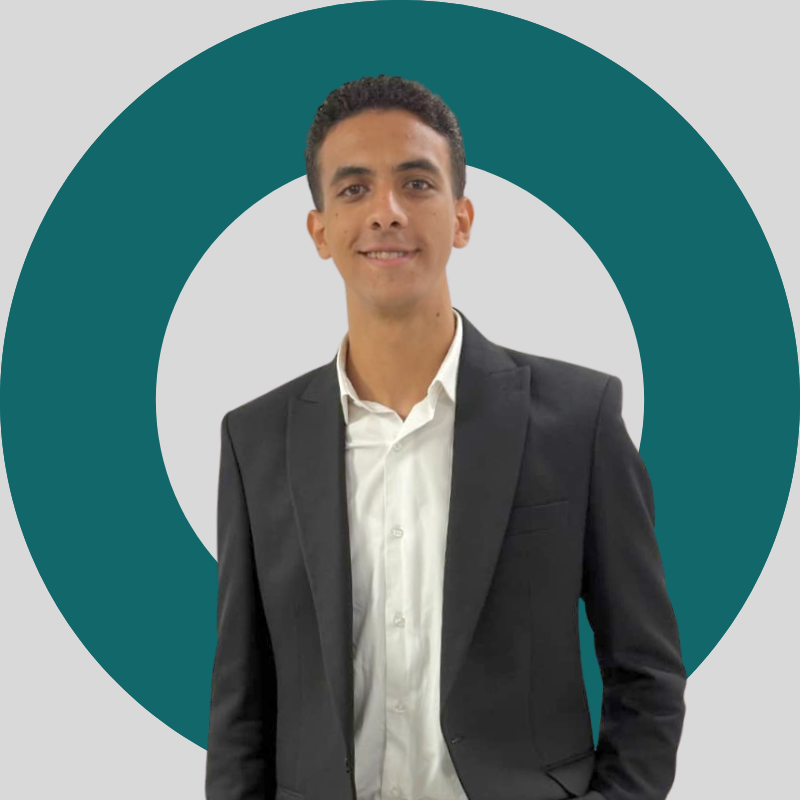

Data Engineer & AI Engineer with hands-on experience building end-to-end data pipelines, analytics platforms, and applied AI systems including ML, DL, and LLM-based solutions.
+201002998021 | eng.anaselalfy@gmail.com | GitHub | LinkedIn
Built ETL pipelines and Power BI dashboards to analyze sales performance and support business growth and planning for the new year.
End-to-end analytics platform using Fabric Lakehouse, Dataflow Gen2, Star Schema modeling, SSAS Tabular, and Power BI dashboards.
View ProjectEnterprise BI solution with SSIS pipelines, data warehouse design, and KPI-driven dashboards.
View ProjectRAG-based QA system using HuggingFace embeddings, FAISS, and LLaMA 3.3, delivered via Streamlit.
GitHubMedical AI assistant using OCR, face recognition, RAG pipelines, and deployed APIs with Flask and FAISS.
GitHubReal-time head pose estimation using Mediapipe Face Mesh, Random Forest, FastAPI, and Docker.
GitHubGraduation project: end-to-end medical imaging platform for disease detection using DL models and YOLOv8.
Python • SQL • PyTorch • TensorFlow • HuggingFace • FAISS • FastAPI • Microsoft Fabric • Power BI • SSIS • SSAS • Azure • AWS • GCP • Docker • Airflow • Git
Phone: +201002998021
Email: eng.anaselalfy@gmail.com
Location: Egypt — Open to Remote / Hybrid / On-site / Full-time / Part-time / Freelance